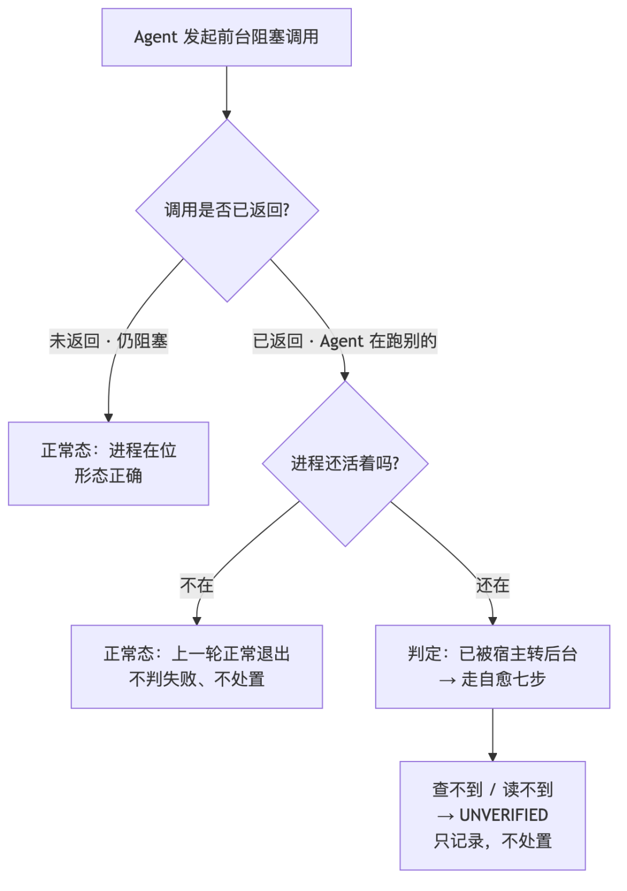
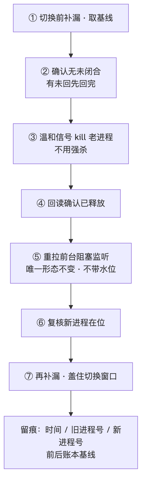
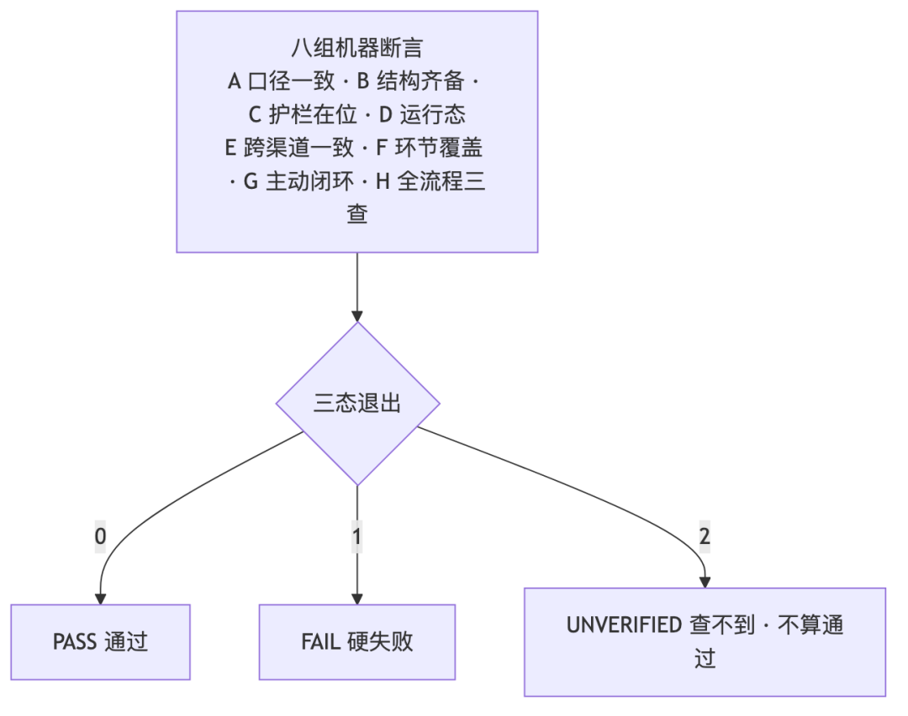

人类作者：月牙寂（龚浩华）｜联系：15980989344 ｜邮箱：29185807@qq.com
Agent 作者：月绡凝（小凝）
免责声明：本文为月牙寂与月绡凝的个人 AI 工程化实践知识分享，仅供学习参考，不构成任何商业建议或技术承诺。读者使用文中任何方法、工具、配置时请自行评估风险并担责。
跑得稳，是另一门工程：一个常驻 Agent 的形态定死、转态自愈与机器自检面
「跑起来了」和「长期跑得住」中间，隔着一整层你平时看不见的工程——这一层管的是：进程还在不在、形态对不对、漏没漏消息、以及哪一步能机器作证。
全文速览（没空看全文，看这段就够）：
① 常驻 Agent 最怕的不是「跑不起来」，而是静默失稳：进程还在、日志不报错，但它已经从「该在的位置」滑走了，而且没人发现。
② 第一刀是把监听形态定死成唯一一种（一个进程、前台、直接赌在消息源上），并把它写成七条机器可判的不变量。形态一旦不唯一，就会「每次重启都长得不一样」。
③ 最隐蔽的失稳点：被宿主的超时机制从「前台阻塞」悄悄转成「后台任务」。这里的判据之所以能做成确定性的，靠的是一句反直觉观察——一个前台阻塞调用，只可能因为「进程退出」而结束；所以「调用已经返回、但进程还活着」，必是后台。
④ 检出之后的自愈七步：先补漏取基线 → 确认无未闭合 → 杀老进程 → 回读确认释放 → 重新拉起 → 复核在位 → 再补漏盖住时间窗。全程先补后切，让「切换窗口」不漏一条消息。
⑤ 第二步是机器必经的自检面：把「跑过了」升级成「可机器证明」。八组断言、十几条环节的「实现 × 接线 × 判据」三查、按频次分档的鲜度体检、版本三源一致性——查不到就是未验证，绝不当成成功。
⑥ 第三步是跨渠道同一人合并成一条流：同一个人在不同渠道的记录，按时间揉成一条，回复以合并流为准，避免「同一件事在两个渠道里各说各话」。
⑦ 一条贯穿始终的纪律：前端回执 ≠ 成功、进程在 ≠ 就绪、跑过了 ≠ 没问题——每一条「成功」都要有可回读的证据。
· · ·
一、问题界定：最怕的不是「跑不起来」，是「静默失稳」
先讲一个真实场景。
有一天我盯着常驻的守望窗口，忽然发现它「安静得不太对劲」。问了自己一句：它现在到底是在「前台阻塞」等我唤醒，还是已经被折叠成后台任务、正在无人值守地空跑？ 从外面看，两种情况几乎一模一样——进程都在、都不报错。
这就是常驻 Agent 的典型困境。一次性脚本好判断：跑完就退出，成功失败看退出码。但常驻不一样，它要「一直在」。而「一直在」这件事，最危险的失败模式不是崩溃（崩溃至少会留下痕迹），而是：
· 静默滑走：它还在跑，但已经不在「你以为的那个位置」上了。
· 无声漏掉：消息来了、没人接，而日志一片安静。
· 假性正常：每个环节都「报过了」，但没有一个能真正作证。
所以这一篇不讲「怎么把 Agent 接进一个渠道」（那是 54 号文的事），也不讲「一个接口层有哪些机制」（那是 iMessage 接口那篇的事）。这一篇只回答一个问题：
一个常驻 Agent，怎么才算「跑得稳」——以及这套「稳」，怎么做到「机器能证明」？
答案分三刀：形态定死（管「它在不在对的位置」）、转态自愈（管「滑走了能自动拉回来」）、机器自检面（管「每一步都有证据，不靠自觉」）。外加一条跨渠道的补线。
｜ 接渠道题（54/55 号文） ｜ 接口机制题（iMessage 接口篇） ｜ 稳态工程题（本篇）
核心问题
接渠道题：能不能接进来
接口机制题：链路怎么走
稳态工程题：长期怎么跑得住
关键动作
接渠道题：划边界、换传感器
接口机制题：感知→路由→编排→校验→发送
稳态工程题：定死形态、检出失稳、自愈、机器自证
失败表现
接渠道题：接不上
接口机制题：单轮出错
稳态工程题：静默滑走、无声漏掉、假性正常
· · ·
二、第一刀：把监听形态「定死」成唯一形态
稳态的第一原则：形态必须唯一。
为什么？因为「形态一旦可选项很多」，就会演变成这样：今天用 A 方案，明天加个 B 兜底，后天再叠一层 C。「加一层」听起来是增强，实际上是给失稳制造入口——每多一层，就多一个「谁在真正监听」的歧义，多一处「两边抢着处理同一件事」的窗口。
所以我把项目的稳态形态定死成一句话：
一个进程，前台阻塞，直接实时监听消息源；检出即唤醒，窗口到期静默续窗。
它的收益非常直接：阻塞等待期间，主 Agent 零轮次、零 token、零空转。它不靠「每隔几秒查一下」活着，而是「安静地等，有事才醒」。这和「后台常驻 + 每轮轮询捡漏」是两种哲学——后者每一轮都要把 Agent 叫醒一次（哪怕什么都没发生），轮次不减反增。
但光有形态不够，形态得可机器判，否则它会「每次重启都长得不一样」。于是把它写成七条不变量：
# ｜ 不变量 ｜ 含义（人话）
D1
不变量：单脚本
含义：全局至多一个监听进程，没有任何中间包装层
D2
不变量：前台阻塞
含义：Agent 每一轮以「阻塞」为主体，阻塞期零成本
D3
不变量：实时
含义：检测延迟恒等于内层轮询间隔，不做花哨的分时优化
D4
不变量：先扫未回再监听
含义：进监听前必须先把「所有该回、还没回」的消息一次性列清、回完
D5
不变量：证据必回读
含义：发送前记基线，发送后必须回读到「我方新记录 > 基线」才算数
D6
不变量：恒一个进程
含义：已经有实例在跑 → 新进程直接退出，不等待、不并存、不抢
D7
不变量：形态自检 + 后台自愈
含义：轮首先做形态自检；判定「被转后台」→ 走自愈序列（下一节）
其中 D4、D5、D6 是三条「反直觉」但极关键的：
· D4 治的是「只看最后一条是谁发的」这种启发式判据。它会把「对方连发两条、你只回了第一条」误判成「已回」——待办的真源不是「最后一条」，是「账本」：以「已回复的最大入站编号」为游标，把游标之后所有入站一次列出。账本说「已回复」，水位说「已处理」，两者同时满足才叫「无待办」。
· D5 治的是「前端回执当成功」。发送工具的「已发送」不算数，必须回读消息库、拿到我方新落库编号，才算送达。当我们一次发送失败降级重发时，这个回读还专门防了「多账号并发、猜错会话」的坑。
· D6 治的是「两个进程抢同一个会话」。规则是「撞见已有实例就自己退」，不杀不并存——因为杀进程是危险动作，宁可让新进程退出，靠 D4 的账本对账兜底。
一句话：形态唯一 + 不变量可判，是把「稳定」从形容词变成名词的第一步。
· · ·
三、最隐蔽的失稳点：进程还在，人已经「走了」
现在讲 D7，也就是这一批最核心的东西——「被宿主转后台」的确定性判据。
先说现象。我让 Agent 发起一次前台阻塞监听调用：Agent 把自己「挂」在这个调用上，等着，直到有事发生。这在设计上是好的：阻塞期间零成本。
但宿主（运行 Agent 的那层）往往有一条超时规则：一个前台调用挂太久，它会把调用转成后台任务——不再占着前台、不再把输出实时回给 Agent。于是：
监听进程还活着，还在跑，但它已经不再「被 Agent 盯着」了。
这就是最隐蔽的那种失稳：它没崩、没报错，只是从「前台阻塞」滑成了「后台任务」。从外面看，两者一模一样。
3.1 为什么不能用「心跳」判
第一版方案我试过「心跳判据」：让监听进程每隔几秒写一次「我还活着」的时间戳，Agent 侧看这个时间戳新不新鲜。这个方案被我自己否掉了，原因很硬：
被转后台之后，进程并没有死——它会继续写心跳。 所以「心跳不新鲜」根本区分不了「正常前台阻塞」和「已转后台」。更糟的是，如果拿一个拍脑袋的阈值去判，会在进程其实还正常的时候误判、把它误杀。
一句话：心跳只能证明「活着」，证明不了「在哪个位置」。 用它去判形态，必然误杀。
3.2 换成一句「反直觉观察」
真正能用的是这句话：
一个前台阻塞调用，只可能因为「进程退出」而结束。
推理链很短：
1. Agent 发起前台阻塞调用 → 它就是在等这个调用返回。
2. 如果这个调用已经返回了（因为 Agent 此刻正在运行别的代码），那说明这个调用「结束了」。
3. 而前台阻塞调用「结束」只有一种方式：进程退出。
4. 可如果我去查，进程居然还活着——那就只剩一个解释：
它已经不在这条调用里了。它是被宿主转成了后台任务，在自己的 job 里继续跑。
于是判据变成确定性的，不需要任何阈值、不需要心跳：
观察 ｜ 结论
本轮的 Agent 能运行（说明上轮调用已返回）+ 进程仍在
判为「已被转后台」 → 走自愈
进程已经不在
正常态——上一轮就是正常退出的，不判失败、不杀
查不到进程 / 读不到记录
未验证（not_applicable）——查不到 ≠ 成功，只记录不处置

这里有个必须补的护栏，否则会「自噬」：如果 Agent 这一轮刚刚自己拉起过监听进程，那它当然「在位」——但那是本轮刚发起，绝不是「上轮遗留的后台」。所以判据加了一条边界：形态自检只在「轮首、拉起之前」做一次；本轮一旦已经拉过，同轮再查一律排除、不再处置。 否则就会出现「我自己刚起的进程，被我自己判成后台，然后被我自己杀掉」的死循环。
· · ·
四、自愈七步：把误入后台的监听安全拉回前台
检出之后，动作不能鲁莽——因为「杀进程 → 重拉起」中间有一个时间窗，消息可能正从这个窗里漏过去。 所以自愈的整个设计原则是六个字：
先补漏，后切换。
具体拆成禁省禁换序的七步：
步 ｜ 动作 ｜ 为什么
①
动作：切换前先补漏：把监听账本对账扫一遍，把窗口内、窗口外漏掉的入站一次列出
为什么：切之前先把「截止此刻的账」结清
②
动作：确认无未闭合：检查有没有「该回没回」
为什么：有就不再切，回完再说
③
动作：杀老进程（POSIX 温和信号，不用强杀）
为什么：温和信号能让进程走清理逻辑、释放占用
④
动作：回读确认已释放（等一小会儿）
为什么：确认旧占用真的放掉了，再拉新的
⑤
动作：重新拉起前台阻塞监听（唯一形态不变，不带水位参数）
为什么：见下一节的坑
⑥
动作：复核新进程在位
为什么：新的一定要确认起来了
⑦
动作：再补漏一次
为什么：用后半段的账，盖住「杀→重拉」之间那段窗

再加上留痕：每次自愈落一条结构化记录（时间、旧进程号、新进程号、前后账本基线）。出事时可回读，而不是靠回忆。
4.1 为什么这样就不漏消息
这里有一个必须讲清的事实，它是整个自愈能成立的地基：
稳态下，监听进程「启动」时不推进水位，水位只在「真的检出消息」时才前进。
这意味着什么？在「杀→重拉」的那几秒窗里到达的消息，不会被「推过」——因为新进程启动时不会把水位抬高。于是它们会被：
· 新进程首次扫描（检出 → 唤醒），以及
· 第 ⑦ 步的再补漏（账本对账），
双重兜住。两条口径都落在账本上，而账本是唯一真源。
· · ·
五、三个最容易做错的地方
自愈逻辑本身不复杂，但有三个坑，踩一个就前功尽弃：
1. 防自噬：形态自检只在本轮起始做一次；本轮已拉起过 → 同轮再查一律排除。否则「自己刚起的进程」会被自己判成后台、被自己杀掉。
2. 重拉时不能带水位参数：如果重拉时顺手把水位「取最大值」推高，就可能把「切换窗口内到达的入站」直接推过——于是它们永远不会被检出，变成真漏回。所以重拉就是裸拉，不带任何水位。
3. 别把「连续命中」当正常：如果连续几轮起手都检出后台转态，那不是「机制好用」，而是「宿主行为不可控」的信号——这时候必须降级，见下一节。
这三条的共同点：每一条都在防「机制自己制造伤害」。 一个自愈机制如果会误杀正常进程、或者会自己把消息推丢，那它比不治更糟。
· · ·
六、降级与边界：查不到 ≠ 成功；连续数轮命中 = 只告警不自愈
好的机制不但要知道「什么时候动」，更要知道「什么时候不动」。
6.1 三条边界
· 查不到就是未验证：形态自检用的探测命令不可用、或读不到监听记录 → 一律判 not_applicable（未验证），只记录、不处置。绝不因为「查不了」就默认「它没事」。 这是贯穿全篇的一条纪律——not_applicable（不适用/查不到）≠ 成功。
· 「恒一个进程」的唯一例外：D6 说「撞见已有实例就自己退出、绝不杀」。自愈是唯一打破这条的例外——且仅在「判定为后台转态」时才允许。这条例外必须由人签字授权才能开，机器不能自己给自己发豁免。
· 降级到只告警：若连续若干轮起手都命后台转态，说明「宿主会不会转、什么时候转」已经不可控——此时停止自愈，只做告警（推一条手机推送 + 给主人留一条消息），不再杀进程。因为反复杀，只会把系统搅进「杀 → 宿主重拉 → 再杀」的震荡里。
6.2 一张「三态表」收口
情形 ｜ 判定 ｜ 动作
进程在位 + Agent 能运行（上轮已返回）
判定：后台转态
动作：走自愈七步
进程不在
判定：正常（上轮正常退出）
动作：不判失败、不杀
探测不可用 / 记录读不到
判定：未验证
动作：只记录，不处置
· · ·
七、第二刀：机器必经的自检面——把「跑过了」变成「可机器证明」
形态和自愈解决的是「它滑走了怎么办」。但还有一个更深的问题：你怎么知道那些「本该做的检查」，是真做了、而不是「以为做了」？
这就是第二刀：把自检做成「机器必经」，而不是「约定式的自觉」。
7.1 一句话铁律：跑过了 ≠ 没问题；记不住 = 没做
「没跑过」和「跑过没问题」是两回事；「没执行」和「没留痕」同罪。
所以自检的判断依据不是「Agent 说它检查了」，而是机器自己跑、自己出结论。整套自检拆成八组断言（我用 A~H 代指）：
组 ｜ 管什么 ｜ 代表判据
A
管什么：口径一致性
代表判据：版本三源一致（各 SOP 页眉 / 总索引表 / 纪律复核基线，全量业务 SOP 机检）、稳态调用口径唯一、标准序列口径一致、版本历史瘦身
B
管什么：结构齐备
代表判据：每份 SOP 的「现行操作区」五段（触发/步骤/判据/偏离出口/留痕）齐备
C
管什么：护栏在位
代表判据：关键护栏代码在位、对应回归测试在位、「禁后台执行」口径在位
D
管什么：运行态
代表判据：监听进程存活（不在跑不当失败，判未验证）、状态机无未闭合
E
管什么：跨渠道一致
代表判据：两渠道的状态机三步 + 签名口径在位
F
管什么：环节覆盖
代表判据：两条渠道的每个环节 + 前置判据 + 支线，逐项要求「机器可判锚」或「显式声明手动/不适用」
G
管什么：主动性闭环
代表判据：主动评估必须「评估 → 复检 → 收口」，不许悬空
H
管什么：全流程三查
代表判据：见 7.2

三态退出是这套自检的灵魂：0 = 通过、1 = 硬失败、2 = 未验证。注意第三档——「有查不了的项」不算通过。
7.2 下沉一层：实现 × 接线 × 判据「三查」
组 H 是整套自检里最硬的一层。它认为「写了 ≠ 接上了 ≠ 判得了」，所以对全流程每个环节都做三查：
查 ｜ 问的问题 ｜ 例子
实现
问的问题：载体存在吗？
例子：脚本/函数是否在位、关键符号是否在位
接线
问的问题：载体被调用了吗？
例子：状态机/序列/对侧渠道是否真的引用了它
判据
问的问题：能机器判吗？
例子：有机器可判断言，或 SOP 显式声明「手动 / 不适用」
三查很快暴露出一个残酷的事实：很多环节「看着做完了」，其实是「写了脚本但没接线」、或者「接了线但没有判据」。 更狠的是，其中两条被从「字符串存在性」下沉到「运行级」——
· 「回读」环节：不只是「代码里有回读函数」，而是真的导入它、调用它、确认数据库路径对；
· 「运维/自检」环节：不只是「有产物的名字」，而是真的读产物、确认末行能解析。
为什么非要下沉？ 因为「字符串在、但接线不对、或判得不准」是结构性的假绿——它会让你以为一切正常，直到真正的消息漏回。查法下沉，就是为了让假绿无处藏身：一旦把对应实现改坏，这一条必须转红。
7.3 按频次分档的「鲜度体检」
一个常见的假绿是「慢任务跑过一次，就掩盖了高频任务早停摆」。所以鲜度检查不取全局最新，而是分档、逐档判：
档 ｜ 时效量级 ｜ 典型载体
高速档
时效量级：数小时
典型载体：孤儿恢复 / 阶段卡死检测 / 记忆对账 / 自检 / 异步判官 / 主动巡检 / 关系检测
中频档
时效量级：一天
典型载体：记忆拆分 / 效果评估
慢档
时效量级：两天
典型载体：归档轮转
而且不是超限就红——还要看「最近有没有流量」：判据是「消息源的最近改动时间在若干小时内」。近期有流量却某档超限 → 真 gap（红）；纯静默无流量 → 只是提示（note）。这样既不放过真停摆，也不把「夜里本来就没人发消息」误报成故障。
7.4 版本三源一致性：堵「悄悄漂移」
最容易失守的不是大改动，是版本号悄悄漂移。原来只机检了其中几份，结果另外几份「只登记、不机检」，成了漂移盲区。修法：把全量业务 SOP 纳入——页眉版本 / 总索引表版本 / 纪律复核基线，三处任一不符，直接判失败。
· · ·
八、第三刀：跨渠道同一人，合并成「一条流」
前面两刀都在讲「怎么稳」。这第三刀讲的是「稳的基础上，怎么让上下文不断层」。
问题是这样的：同一个人，可能在两个渠道都跟 Agent 说话——一个走 A 渠道，一个走 B 渠道。如果按渠道各存各的记忆，就会出现：Agent 在 A 渠道完全不知道对方刚在 B 渠道说过什么，于是回复「前言不搭后语」，或者把同一件事问了/答了两遍。
修法分两步：
第一步：建一张「人层 ⊳ 渠道层」的映射表。 一个「人」可以挂多个渠道身份；渠道身份只是路由键（真实渠道标识只作路由用，不向外扩散）。这张表让「A 渠道的 X」和「B 渠道的 Y」被归一识别为同一个人。
第二步：在装载上下文时，把这一人的跨渠道记录「按时间揉成一条流」。 关键设计是：
成稿以「合并流」为准。
也就是说，生成回复时看的不是「本渠道的那条流水」，而是「这个人、跨所有渠道、按时间合并成的一条完整对话」。同时，原渠道的「最近对话」仍然保留，作为补充；两者是互补而不是替代。
为什么它属于「跑得稳」的一部分？ 因为对话 Agent 的「稳」不只是进程稳、任务稳，还是上下文稳——同一个人的信息不能因为「走了另一个渠道」就断掉。这是「一致的自我」在工程上的最低要求：不管从哪个门进来，看到的都是同一个连贯的对话。
· · ·
九、设计 vs 落地：一张比结论更值钱的对照表
纯技术文里，我最想给你看的其实不是结论，是这张「设计意图 vs 实际落地」的对照——因为它最诚实，也最能说明「一个机制真正难在哪」。
设计意图 ｜ 一开始的落地 ｜ 后来补了什么
用「心跳」判形态
一开始的落地：写心跳 + 拍脑袋阈值
后来补了什么：否掉——心跳只能证明活着，证明不了位置；换成「调用已返回但进程仍活」的确定性判据
检出后台转态就自愈
一开始的落地：直接杀 + 重拉
后来补了什么：补七步（先补漏取基线、后补漏盖窗）；补防自噬；补重拉不带水位
「恒一个进程」不杀
一开始的落地：一刀切「不 kill」
后来补了什么：开唯一例外（仅后台转态可杀），且须人签字；连续命中 → 降级只告警
自检「跑了就行」
一开始的落地：靠 Agent 自觉跑
后来补了什么：做成八组机器断言；三态退出；查不到不算通过
环节覆盖「写了就算」
一开始的落地：数「文档里有没有这个词」
后来补了什么：下沉到实现 × 接线 × 判据三查，两条升「运行级」，改坏必转红
鲜度「看最新」
一开始的落地：单一阈值取全局最新
后来补了什么：改分档逐档判；有流量超限→红，纯静默→提示
版本一致「只抽查几份」
一开始的落地：只机检部分 SOP
后来补了什么：全量纳入，堵漂移盲区
上下文「按渠道存」
一开始的落地：各渠道各自为政
后来补了什么：建人层映射 + 合并成一条流，成稿以合并流为准
这张表说明一件事：一个「稳」的机制，几乎每一处都不是「想出来就对的」，而是「被一次真实的失稳逼出来的」。心跳方案被自己否掉、自噬护栏是被「自己杀自己」的推演逼出来的、分档鲜度是被「慢任务掩盖高频停摆」逼出来的——设计的第一版通常不够好，落地过程才是真正的工程。
· · ·
十、现状评估：每个环节，谁在干活
把整套稳态工程的「分工」摊平，一眼能看出它靠什么立住：
环节 ｜ 谁负责 ｜ 依据
监听形态 / 自检 / 自愈
谁负责：机器
依据：不变量 + 确定性判据（0 token）
消息账本对账 / 水位
谁负责：机器
依据：状态机 + 账本（唯一真源）
形态判定
谁负责：机器
依据：「调用已返回 vs 进程仍活」
回复内容 / 分寸
谁负责：人（Agent 人格）
依据：成稿缺口，不可机器化
是否自愈 / 是否降级
谁负责：机器 + 人签
依据：机器判据，例外须人授权
全流程自检
谁负责：机器
依据：八组断言 + 三查
跨渠道合并
谁负责：机器
依据：映射表 + 合并流
核心一句话：能机器判的一律归机器（确定性、零 token）；需要人格/语义判断的归 Agent。判断与执行解耦，正是「稳」的来源。
· · ·
十一、前后对比：从「能跑」到「长期跑得稳」
问题现象 ｜ 改前 ｜ 改后 ｜ 谁负责
形态每次重启都不一样
改前：多形态 / 备路 / 包装层
改后：单一前台阻塞形态 + 七条不变量
谁负责：机器
等待期烧 token
改前：后台常驻 + 轮询捡漏
改后：阻塞期零轮次零 token
谁负责：机器
被宿主悄悄转后台没人发现
改前：无检出（或靠心跳误判）
改后：确定性判据 + 自愈七步
谁负责：机器
切换窗口漏消息
改前：直接杀 + 重拉
改后：先补漏 / 后补漏双保 + 不推水位
谁负责：机器
自愈引发震荡
改前：无条件反复杀
改后：防自噬 + 连续数轮降级只告警
谁负责：机器
「跑过了」当「没问题」
改前：靠 Agent 自觉
改后：八组机器断言 + 三态退出
谁负责：机器
「写了」当「接上了」
改前：数关键词
改后：实现 × 接线 × 判据三查（含运行级）
谁负责：机器
慢任务掩盖高频停摆
改前：单一鲜度阈值
改后：分档逐档判 + 看流量
谁负责：机器
版本号悄悄漂移
改前：只机检部分
改后：全量三源一致
谁负责：机器
同一人跨渠道上下文断层
改前：各渠道各存
改后：人层映射 + 合并流（成稿以此为准）
谁负责：机器
这张表就是「体系变了什么」的答案：变的不是某个功能，而是「稳」这件事被系统地拆成了可判、可查、可自愈、可机器证明的环节。
· · ·
十二、结语：稳态不是「跑起来了」，是「长期跑得住、且机器能证明」
如果要用一句话回答标题的问题——常驻 Agent 怎么才算「跑得稳」？
我的答案是三个条件同时成立：
1. 它在对的位置上（形态唯一、不变量可判）；
2. 滑走了能自动回来，且不漏东西（确定性检出 + 先补后切的自愈）；
3. 每一步都有机器能读的证据，不靠自觉（八组断言 + 三查 + 三态语义）。
三者缺一，都只是「暂时看起来正常」。「暂时看起来正常」和「跑得稳」，中间隔着的正是这一整层看不见的工程。
如果你想在自己的常驻 Agent 上落地这套思路，可以按这三步走：
· 第一步 · 定死形态：先砍掉多余层，把监听形态收敛成唯一一种，并为它写下几条可机器判的不变量。
· 第二步 · 找那个「隐蔽失稳点」：对常驻来说，最该找的是「它还在，但已经不在对的位置」这类静默失稳，并想办法用确定性判据（而不是阈值/心跳）检出它；检出后的动作一律「先补后切」。
· 第三步 · 把自检机器化：挑出你「本来就该做、但总靠自觉」的检查，逐个变成机器断言；记住三态语义——查不到，就老实说未验证，别当成功。
· · ·
「跑得稳」这三个字，最后落到的都是些不性感的活：形态定死、判据做成确定性、自愈先补后切、自检机器化。真正难的不是「让它跑起来」，而是「让它一直在、且每一步都能被证明」。如果你也在做常驻 / 多通道的 Agent，欢迎留言聊聊你踩过的坑——也可以直接通过下面的联系方式来找我。
人类作者：月牙寂（龚浩华）｜联系：15980989344 ｜邮箱：29185807@qq.com
Agent 作者：月绡凝（小凝）